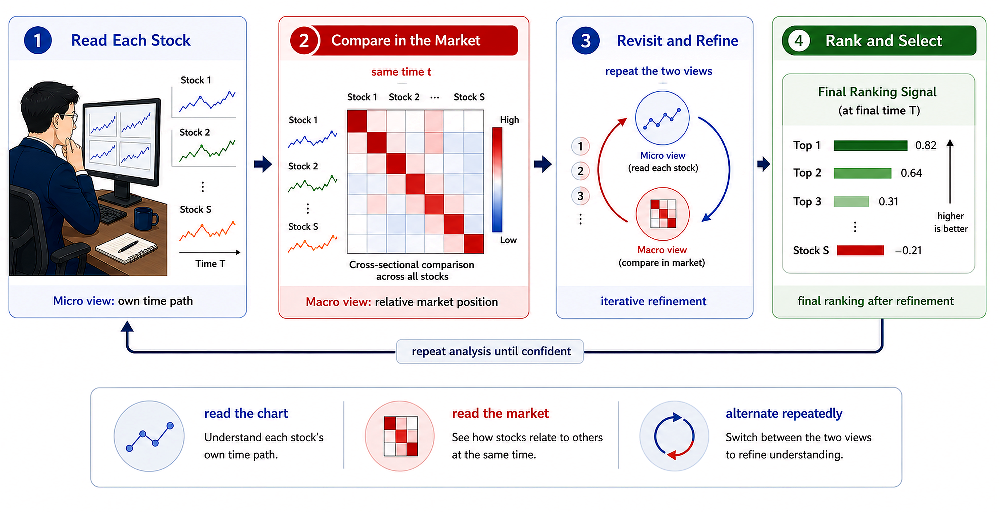
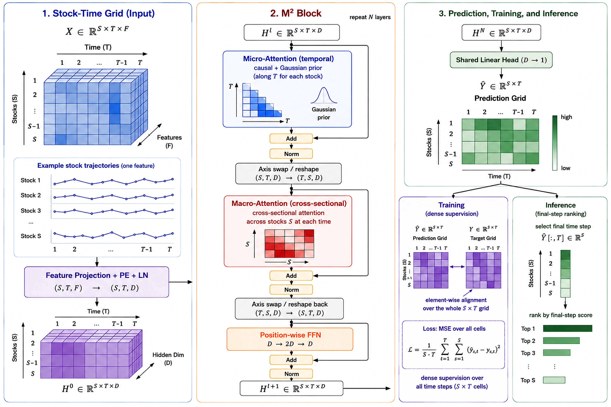

The architecture diagrams and M² Block notes show how the model reads single-stock time paths and same-day cross-sectional relations together.
Entry · — · Buy at Open
M-0-M cross-sectional Top 5 picks · Based on the — close · Rebalance at 09:30 on the next trading day
| # | Code | Name | Industry | Score | Signal | Ref Price | Weight |
|---|
📋
Strategy: the public baseline is M-0-M; M-1-M / M-2-M historical capability curves are shown on the Backtest page.
Rules →
Daily Review · — samples
The Top 5 portfolio follows the research benchmark: delayed signal, open execution, sell-band discipline, and fee accounting. This page reviews daily portfolio return vs CSI 300.
Avg Daily Excess
+0.00%
Top 5 average return minus CSI 300
Daily Win Rate
0.00%
— / — days Top 5 beat the benchmark
Stock Hit Rate
0.00%
Share of holdings beating the benchmark
Best Day
+0.00%
—
Last 60 days · Top 5 portfolio vs CSI 300 Beat Trail
Last 10 days · Holdings and realized performance
— / —
OOS Backtest · 1M Initial Capital · NAV Curve
M-0-M is the stable public baseline for this page. M-1-M and M-2-M are virtual historical research lines built on a local full-factor panel, shown only to compare model capability under one benchmark protocol. M-1-M / M-2-M stop on 2026-06-10; they are not new daily picks.
LATEST
M-2-M latest capability line
Frozen backtest on the full-factor panel: cumulative —, Sharpe —, MaxDD —.
→
Final NAV
1M initial capital → period end
Cumulative
+0.00%
CSI 300 over the same period —
Excess Return
+0.00pp
After fees
Monthly Win Rate
0%
—
Max Drawdown
0.00%
Maximum drawdown in range
Sharpe Annualized
0.00
Return / volatility · annualized
NAV Curve · M-0-M / M-1-M / M-2-M vs CSI 300 M-0-M M-1-M M-2-M CSI 300 Drawdown
Monthly Returns · Model vs CSI 300 Monthly excess win rate — / —
Model Preference · Based on all Top 5 holdings in range
Top 5 Industry Distribution
12 Most Frequent Holdings
RESEARCH-TO-REPRODUCTION REPOSITORY
What M²-Alpha Is
M²-Alpha (Micro-Macro Alpha Engine) is a deep-learning alpha repository for A-share cross-sectional stock selection. It packages model design, training logic, released weights, benchmark rules, and this public dashboard into one readable, reproducible, research-friendly project.
M-0-M, M-1-M, and M-2-M correspond to the compact release baseline, the canonical 3-block line, and the deeper 5-block iterative line. Full method details, training entry points, factor contracts, and backtest scripts are maintained in the GitHub repository and the technical report.
Released weights3
Input factors35
Benchmark strategyTop 5
LicenseApache 2.0
Use the model zoo to separate the compact 3-block family from the deeper iterative 5-block line.
The factor page lists all 35 inputs, their intended role, and which fields are missing or approximated in public/open-data sources.
Run the benchmark with a compatible full panel; with only free public data, treat the output as an open-data baseline.
ARCHITECTURE
Micro-Macro Alpha Architecture
M²-Alpha represents each trading-day universe as a three-dimensional stocks S × time T × factors F grid. Instead of collapsing every stock into one terminal vector too early, it preserves an S × T × D representation across the whole window, so temporal Micro attention and cross-sectional Macro attention can repeatedly reread the panel inside stackable M² Blocks.


S × T × F, where S is stock count, T=8 is lookback length, and F=35 is the daily factor set.D=128, combined with positional encoding and normalization, producing H0 ∈ R^(S×T×D).S × T prediction grid; inference uses only the final time step Y[:,T] for daily cross-sectional ranking.This design lets path interpretation and relative-strength comparison correct each other. A deeper model is not just more parameters; it allows Micro and Macro to exchange context over more refinement rounds.
TECHNICAL REPORT
Full PDF technical report The report contains method diagrams, experiment settings, ablations, and reproduction boundaries. The PDF and repository docs are the source of truth.MODEL ZOO
Three Model Designs
The three released weights share the same stock-time grid → M² Block → dense prediction grid route. Lookback length, hidden width, Micro/Macro attention heads, and the Gaussian neighbor prior stay aligned. The main differences are release positioning, the canonical 3-block checkpoint, and the deeper 5-block iterative variant.
Shared base T=8 · F=35 · D=128
Micro heads 4
Macro heads 2
Gaussian σ=4
Dense supervision
M-0-M
compact release anchor · 3 blocksCompact release baseline. It is the smallest readable, runnable, maintainable M² stack: three M² Blocks, Micro reading each stock path first, Macro then reordering same-day stock relationships, with no extra gating complexity. It anchors the repository with a stable implementation.
- Prioritizes stability and transparency as a release/reference line.
- Belongs to the same 3-block family as M-1-M, not a separate architecture.
3 blocksrelease anchorno extra gating
M-1-M
canonical 3-block lineFirst-generation canonical line. It keeps 3-block depth and asks whether the base M² Block is already strong enough: dense supervision trains the whole prediction grid, while inference ranks only the final time step. This is the standard compact M²-Alpha form.
- Tests the first-order value of decoupled Micro/Macro modeling plus iteration.
- Structurally close to M-0-M; the distinction is mainly checkpoint lineage and research protocol.
3 blockscanonical M²dense grid
M-2-M
deep iterative line · 5 blocksSecond-generation deeper line. It stacks M² Blocks to five layers, giving Micro more chances to reread time paths and Macro more rounds to correct relative positions. Depth here means cross-sectional context injected by Macro flows back into the next Micro pass, then gets recalibrated again.
- Targets stronger representation of co-movement, industry crowding, and relative strength.
- The only version that materially changes block depth and iteration count.
5 blocksmore refinementcapacity line
Along the design axis, M-0-M and M-1-M are compact same-depth lines, while M-2-M is the deeper iterative line. Factor completeness and public-data limits are documented separately in Data & Factors and Quick Start.
DATA AND FACTORS
35 Input Factors
M²-Alpha uses 35 input factors covering momentum, moving-average deviation, volatility, candlestick shape, trading activity, turnover, valuation, and money-flow structure. Each factor is first constructed along each stock history, then robust z-scored cross-sectionally on the same trading day before entering the M² Blocks. The closer the factor panel is to the full contract, the closer the model gets to its research-training and strong-backtest capability.
Momentum Returns
8 factors- What
- Cumulative returns over multiple past windows.
- Role
- Helps the model identify short-term continuation, reversal, and medium-term trend strength.
- Formula
close / close.shift(k) - 1, withk=1,2,3,5,10,20,30,60.
f_ret_1 · f_ret_2 · f_ret_3 · f_ret_5 · f_ret_10 · f_ret_20 · f_ret_30 · f_ret_60
Moving-Average Deviation
5 factors- What
- Close price relative to moving averages at different horizons.
- Role
- Provides a reference for overheated, weak, or equilibrium-breaking price behavior.
- Formula
close / rolling_mean(close,k) - 1, withk=5,10,20,30,60.
f_close_ma_5 · f_close_ma_10 · f_close_ma_20 · f_close_ma_30 · f_close_ma_60
Return Volatility
5 factors- What
- Rolling standard deviation of recent daily returns.
- Role
- Captures risk, disagreement, and instability, helping separate strong trends from noisy swings.
- Formula
- Compute 1-day return first, then
rolling_std(ret_1,k)withk=5,10,20,30,60.
f_vol_5 · f_vol_10 · f_vol_20 · f_vol_30 · f_vol_60
Candlestick Shape
4 factors- What
- Normalized body, full range, upper shadow, and lower shadow for the day.
- Role
- Captures intraday buying/selling pressure, failed breakouts, rebounds, and range structure.
- Formula
- Normalize by
open:(close-open)/open,(high-low)/open, and shadow ratios.
f_kmid · f_klen · f_kup · f_klow
Trading Activity
5 factors- What
- Volume relative to its own rolling mean, plus one-day changes in volume and amount.
- Role
- Detects volume expansion/contraction, shifts in trading heat, and participation behind price moves.
- Formula
vol / rolling_mean(vol,k)withk=5,10,20; alsopct_change(vol,1)andpct_change(amount,1).
f_vol_ratio_5 · f_vol_ratio_10 · f_vol_ratio_20 · f_vol_chg_1 · f_amount_chg_1
Turnover & Volume Ratio
3 factors- What
- Share turnover speed, free-float turnover, and the vendor-style volume ratio.
- Role
- Measures crowding, short-term attention, and abnormal trading activity.
- Formula
- Use
turnover_rate,turnover_rate_f, and vendor-stylevolume_ratio, then cross-sectionally standardize.
f_turnover_rate · f_turnover_rate_f · f_volume_ratio
Valuation Position
3 factors- What
- TTM P/E, P/B, and TTM P/S.
- Role
- Adds valuation context to price-volume signals, helping distinguish trend, crowding, and fundamental pricing position.
- Formula
- Read
pe_ttm,pb, andps_ttm, handle outliers, then apply same-day robust z-score.
f_pe_ttm · f_pb · f_ps_ttm
Money-Flow Structure
2 factors- What
- Main-fund net inflow intensity and the directional gap between large and small orders.
- Role
- Adds order-flow behavior, helping tell whether price movement is driven by active buying, active selling, or scattered trades.
- Formula
net_mf_amount / amount; and(buy_lg + buy_elg - buy_sm) / (buy_lg + buy_elg + buy_sm + 1).
f_mf_net_ratio · f_mf_big_small_diff
f_volume_ratio, f_mf_net_ratio, and f_mf_big_small_diff cannot be obtained as stable full-history truth fields; f_turnover_rate_f may only be approximated. The model is closest to research capability when the full factor panel is available.
BENCHMARK STRATEGY
Unified Backtest Strategy
The backtest page does not show the prettiest curve after arbitrary tuning. It uses fixed rules to compare model ranking ability, making it clear that performance comes from model scores, data protocol, and portfolio rules rather than parameter picking after the fact.
- UniverseDynamic top1000 stock pool sampled by month-end float market cap
- SelectionTake the top 100 predicted names each backtest day, then build a Top 5 portfolio
- WeightsEqual weight, 20% per holding; no score-weighting
- Industry capIndustry cap20; if the portfolio cannot be filled, continue with the research benchmark fallback
- Sell ruleSell only after a name falls out of daily Top 200, reducing excessive turnover
- ExecutionOpen execution and open NAV accounting, fee_rate=0.0013, with no additional slippage model
This strategy is for the public benchmark and research-curve explanation. Real trading requires fresh assessment of liquidity, slippage, execution constraints, and compliance requirements.
AGENT QUICK START
Prompt for a coding agent
The prompt below can be handed directly to a coding agent to set up the local environment, inspect data, launch the dashboard, or run a benchmark. It explicitly separates public display data from the full research factor panel to avoid mixing open-data output with full-factor research results.
Launch the static docs/ page and verify that M-0-M/M-1-M/M-2-M curves and model docs open correctly.
Inspect docs/METHOD.md, m2alpha/, and model_registry.yml, then explain the M² Block and three released weights.
If only public data is available, run only the public baseline. If a full 35-factor top1000 panel exists, run the research benchmark.
Ask the agent to record commands, data paths, strategy parameters, and output files so open-data baseline results are not mixed with full-data research results.
You are my coding agent. Help me configure and use the M2-Alpha repository:
1. Clone and enter the repository: github.com/Johnny-xuan/M2-Alpha.
2. First read README.md, docs/METHOD.md, docs/DATA_SOURCES.md, docs/REPRODUCTION.md, and model_registry.yml.
3. Create a Python environment and install requirements.txt; do not modify model weights.
4. Launch the local site: python -m http.server 8765 --directory docs, then verify that the Backtest and About pages open correctly.
5. Explain the three model lines:
- M-0-M: compact release baseline, 3-block M² stack, suitable for checking the implementation and public display.
- M-1-M: first-generation canonical line, also 3-block, useful for understanding the standard base M² Block form.
- M-2-M: second-generation deeper line, 5-block, useful for understanding the extra representation capacity from deeper Micro/Macro iteration.
6. Important data boundary:
The public/open-data path does not include the full research data. Training and strong benchmark results used a richer research panel,
including the full 35 factors, dynamic top1000 stock universe, volume ratio, free-float turnover, valuation, and money-flow fields.
If I only provide free BaoStock/AKShare/efinance data, clearly state that it cannot fully reproduce the M-1-M/M-2-M research capability.
7. If I want to reproduce the benchmark, first ask me for a compatible panel path; then use the unified strategy:
n_hold=5, pool_rank=100, sell_rank=200, industry cap20, open execution/open NAV, fee_rate=0.0013.
8. Finish with a short report: what code was run, where the data came from, what outputs were produced, and which factors remain unreproducible.The public repository can open-source code, weights, and workflow, but it cannot bundle the full research data used for training. To reproduce the strong research curves, prepare a compatible full factor panel; with only free public data, treat results as an open-data baseline.
OPEN LICENSE
Open License and Commercial Use
The M2-Alpha repository is released under the Apache License 2.0. Code, model weights, training scripts, backtest code, and the web dashboard may be used for academic research, derivative development, and commercial projects, provided that the license and required copyright notices are preserved.
Data should be considered separately: BaoStock, AKShare, efinance, and any data source you connect yourself have their own terms and upstream restrictions. The repository provides construction and adapter logic, but it does not guarantee the authorization scope of external data.
RISK NOTICE
Risk Notice
- This is not investment advice in any form. The site displays model predictions and historical backtests.
- Past backtests do not imply future performance. Model effectiveness may decay as market structure changes.
- The historical backtest includes a worst single day of — on —; real trading must tolerate short-term drawdowns.
- Executing differently from the rules, such as buying only a few names, using unequal weights, or delaying rebalance, can materially change realized results.
- Real trading requires independent assessment of fees, slippage, capital size, risk tolerance, and compliance constraints.
- Any decision made based on this site is the user's own responsibility.